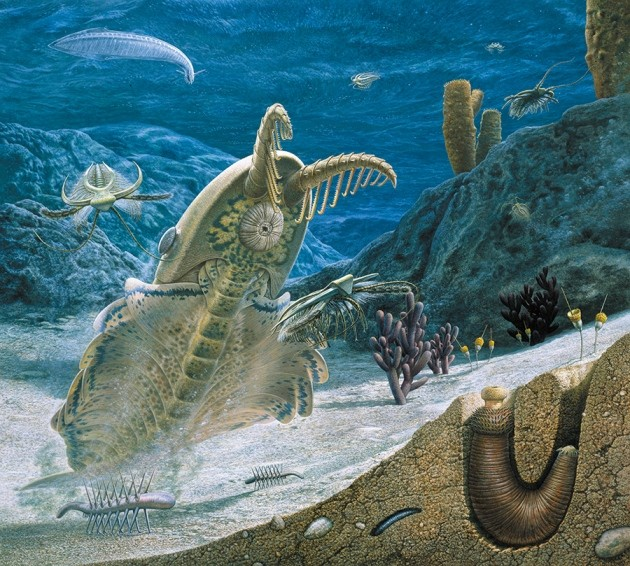
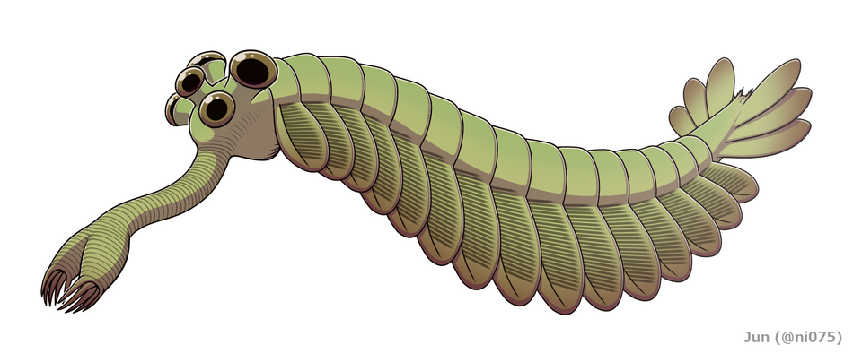
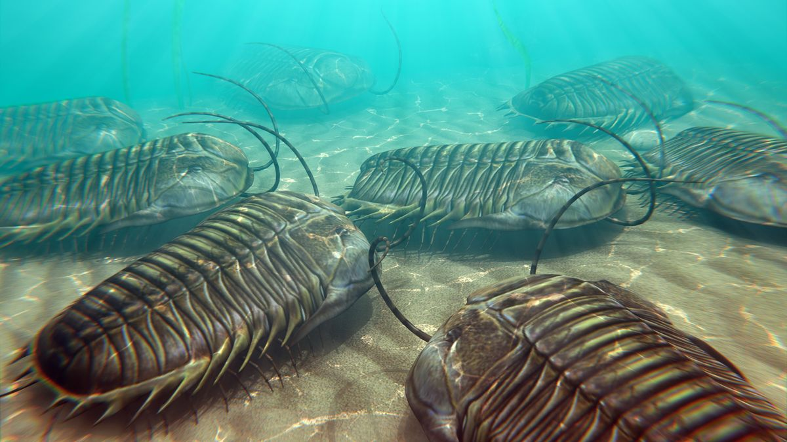

Den här websidan är inte gjord av en biolog eller en argulog. Så, ta vad jag sajer med en nipa salt.

Denna tidsperiode är när livet på jorden björa ta fart. Liv uppstod så klart tidare, men det är nu det spirder sig på rekode tid! Tvär så är fossiler väjdet salsint fårn piroden. Fuktum är att det är mer sannuliket att du dör på vagen till låten, än att ett djur fossoliseras. Men varje fossil man hittar visar hur mycket liv som har funnits på denna jord.
• Echinoderms (sjöstänor och sjöborre.)
• Molluscs (Snakor och snigelar.)
• Arthropoda (Hummer och fästingar.)
• Chordata (Dägdjure, fåglar och reptiler.)
Det finns 40 fyla idag och många vetenskapsmen tror dom mest normla familierna idag kommer från denna pariod. Men foile uppteckter i kina visar på att visa gruper har redan uppståts innan Kambrium parioden.

Verusen du ser på bliden hetter Opabinia. Vad vi vet om den är att den tillhör arthropoda, en mycket utspread artfamilje i den här tids parioden. Många mask likenade djur bröjade gräva (för tiden) komplixa håll för skydd. Vi tror att opabina's "snabelklo" användes för att dra ut dom maskarna ur sina hem, innan den viker sig in till munen som är på undersidan av djuret huved för att bli uppätet. Dom 5 ögona som arten betycknas med var någ en privete varijtoin på sammansattaögon eller compound eyes på enslska, den typen av ögon finns på många insekter som t.ex flugor. Sammansattaögon är bra för att se rörelse men inte bra för att se detje.

Trilobites var den mest utspreada på den här tiden, så många att vi har hittat 4500 olika arter. Dom lived för ca 300 miljarder år innan dom dågut. Men varför? Trilobiter hade en långsam utdöde med prioder av återhämting. Till slut kom perm-trias-utdöendet, där 90% av arterna på jorden dågut, vi vet inte exact vad som hände men det finns gissinar på metorider, mega vulkaner i Sibirin, en supernåva för nära jorden och att knaske hälten av syre gick ner bode i land å have.